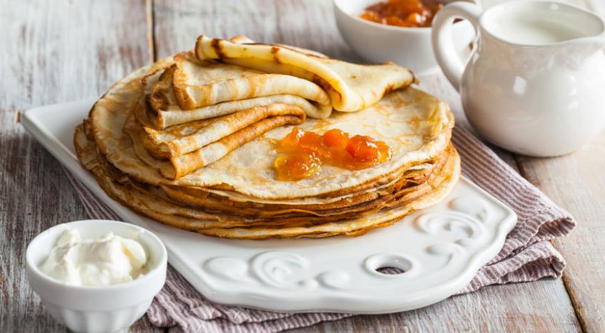

Умение готовить домашние тонкие блинчики никогда не будет лишним: они могут стать отличной палочкой-выручалочкой в самых различных ситуациях. Самое простое, что приходит в голову, — это завтрак. Готовятся блинчики довольно быстро, что очень важно утром, а любят их все. Помимо этого очевидного варианта, есть и другие. Блины можно начинить мясом или творогом, свернуть трубочками и подрумянить со всех сторон. Сытный ужин готов! А еще из домашних тонких блинчиков можно приготовить своеобразные роллы — с наполнителем по вашему вкусу. Дайте волю кулинарной фантазии!

Пошаговую инструкцию по приготовлению найдете ТУТ